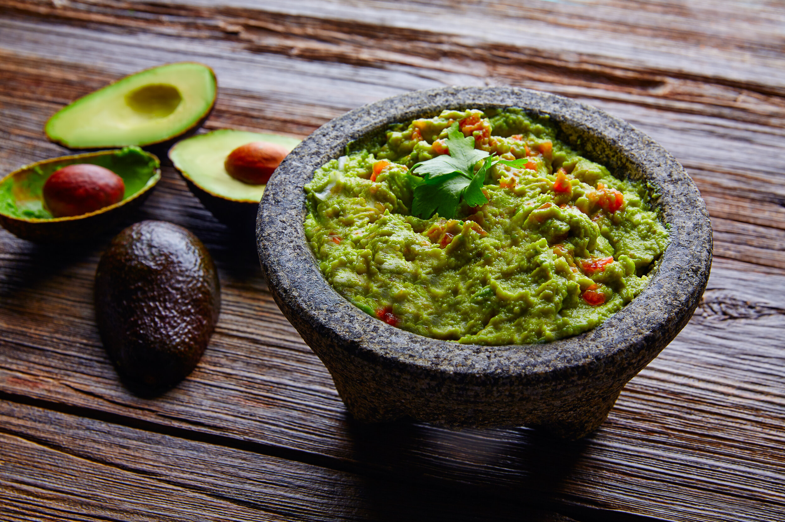
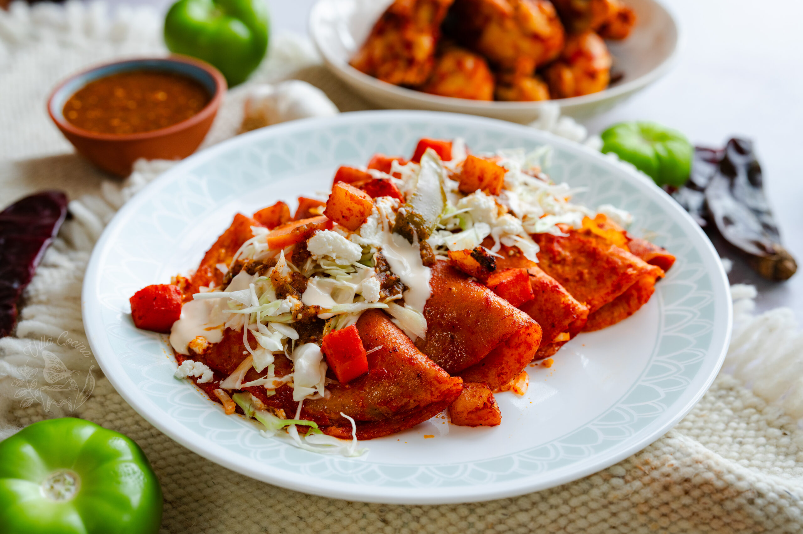

Serving Size:Serves 4
Prep Time:
10 min
Cook Time:
0 min
Total Time:
10 min
Ingredients:
• 3 ripe avocados
• 1 lime, juiced
• 1/2 small white onion, finely diced
• 2 Roma tomatoes, diced
• 1/3 cup fresh cilantro, chopped
• 1 jalapeño pepper, seeded and minced
• 1 clove garlic, minced (optional)
• Salt to taste
`,
`
Instructions:
1. Cut avocados in half, remove pit.
2. Scoop out avocado into a bowl.
3. Add lime juice and mash until desired consistency.
4. Mix in onion, tomatoes, cilantro, and jalapeño.
5. Add garlic if using.
6. Season with salt to taste.
7. Cover with plastic wrap touching surface.
8. Refrigerate for 1 hour to blend flavors.
9. Serve with tortilla chips.`)">
Classic Guacamole
Serving Size:Serves 6
Prep Time:
30 min
Cook Time:
30 min
Total Time:
1 hr
Ingredients:
For the sauce:
• 4 dried guajillo chilies
• 2 dried ancho chilies
• 4 garlic cloves
• 1 onion
• 2 tomatoes
• Salt to taste
For the filling:
• 3 cups shredded chicken
• 12 corn tortillas
• 1 cup Mexican crema
• 1 cup queso fresco
• Lettuce and radishes for garnish
`,
`
Instructions:
1. Toast and soak chilies until soft.
2. Blend chilies with garlic, onion, tomatoes.
3. Strain sauce and cook until thickened.
4. Dip tortillas in hot sauce.
5. Fill with shredded chicken.
6. Roll and arrange in baking dish.
7. Top with remaining sauce, crema, and cheese.
8. Bake at 350°F for 15-20 minutes.
9. Garnish with lettuce and radishes, serve hot.`)">
Chicken Enchiladas Rojas